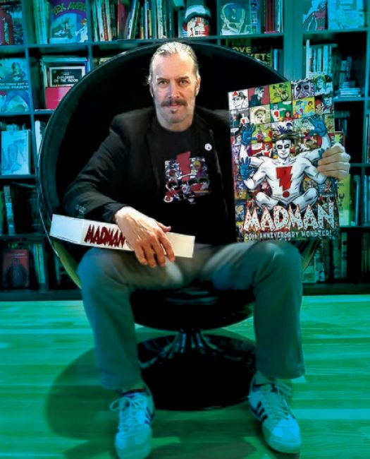
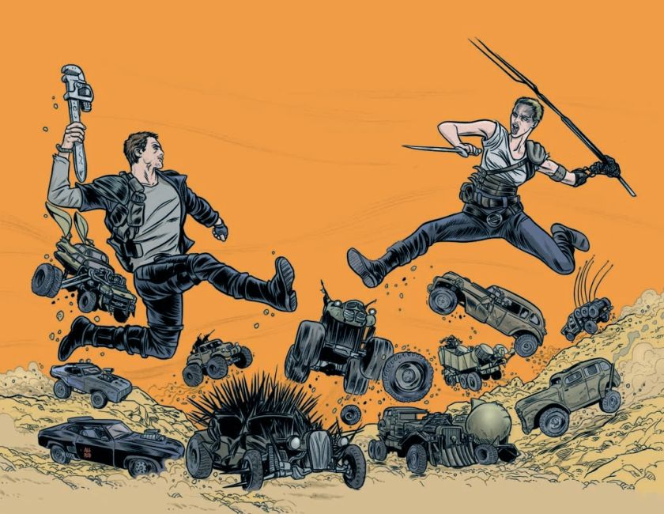
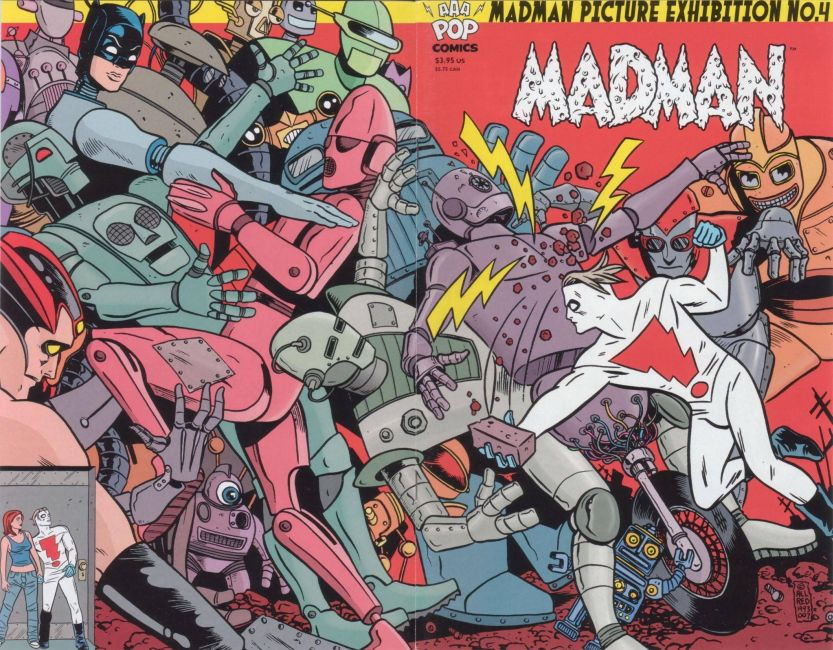
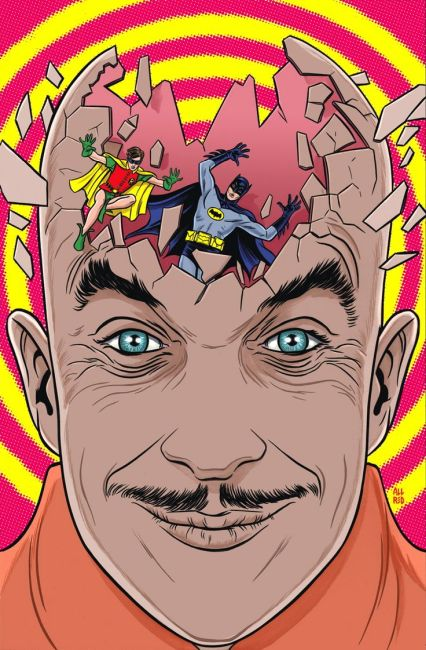
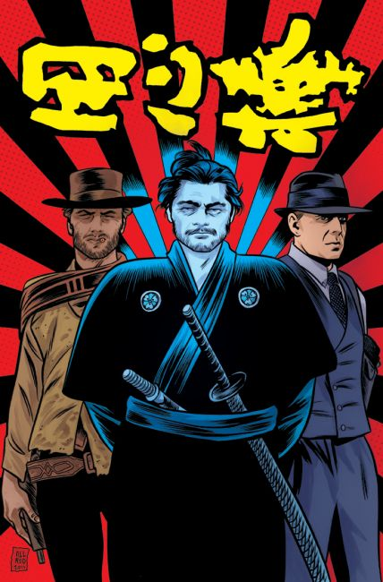
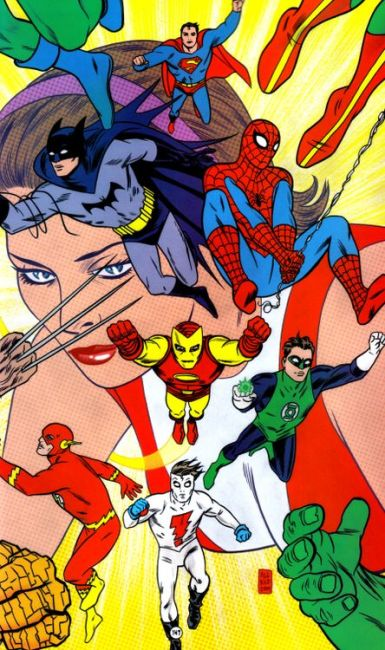
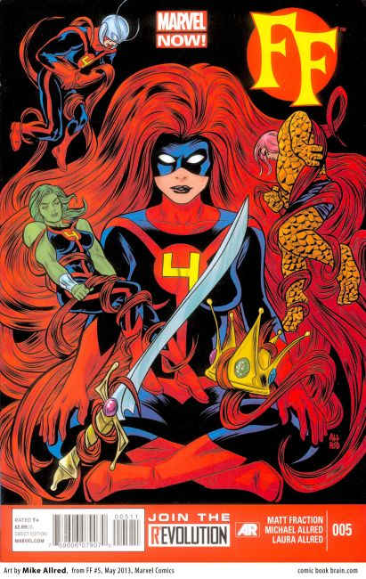
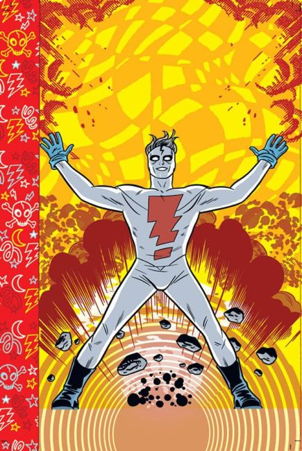
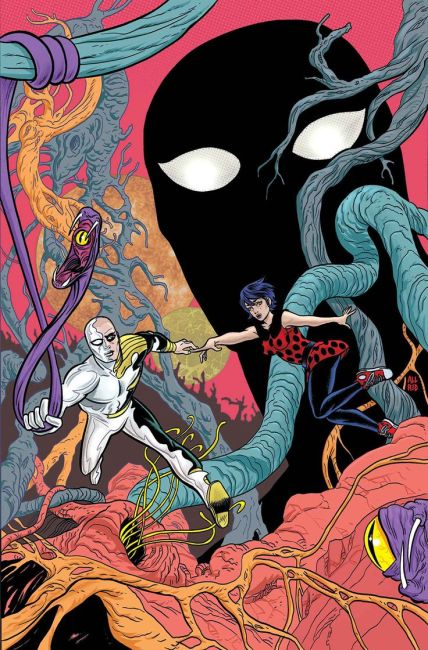

×








❮
❯
Michael Dalton Allred is an American comic book artist and writer most famous for his independent comics creation, Madman. His style is often compared to pop art, as well as commercial and comic art of the 1950s and 1960s. Allred's retro-styled artwork is a frequent nominee for comics awards such as the Harveys, the Eisners, and the Eagles. In his career, he has received:
2009 Inkpot Award
2011 AML Award in the category of "Special Award in Graphical Narrative" for a lifetime of comic art
2015 The television adaptation of his Vertigo comic book series iZombie was the recipient of the Best New Fandom award at the 2015 MTV Fandom Awards
2016 The Eisner Award or Best Single Issue/One Shot (Silver Surfer #11)
Issues:
Dead Air (Slave Labor Graphics, 1989)
Graphique Musique #1–3 (Slave Labor Graphics, 1989–1990)
Creatures Of The Id #1 (Caliber Press, 1990)
Grafik Muzik #1–4 (Caliber Press, 1990–1991)
The Everyman (Epic Comics, 1991)
Madman #1–3 (Tundra Publishing, 1992)
Madman Adventures #1–3 (Tundra Publishing, 1992–1993)
Vertigo Visions: The Geek #1 (DC Comics/Vertigo, 1993)
Vertigo Jam #1 (DC Comics/Vertigo, 1993)
Sandman #54 (DC Comics/Vertigo, 1993, with writer Neil Gaiman)
Madman Comics #1–20 (Dark Horse Comics, 1994–2000)
Untold Tales of Spider-Man '96 #1 (Marvel Comics, 1996)
Superman/Madman Hullabaloo #1–3 (DC Comics/Dark Horse Comics, 1997)
Red Rocket 7 #1–7 (Dark Horse Comics, 1997–1998)
The Atomics #1–15 (AAA Pop, 2000–2001)
Superman and Batman: World's Funnest #1 (DC Comics, 2001)
Green Lantern/Superman: Legend of the Green Flame #1 (DC Comics, 2001)
X-Force #116–128 (Marvel Comics, 2001–2002, with writer Peter Milligan)
Ultimate Marvel Team-Up #4–5 (Marvel Comics, 2001)
Catwoman vol. 3 #1–4 (inker) (DC Comics, 2002)
Just Imagine Stan Lee with Chris Bachalo Creating Catwoman #1 (inker) (DC Comics, 2002)
X-Statix #1–4, 6–9, 11–19, 21–26 (Marvel Comics, 2002–2004, with writer Peter Milligan)
Vertigo X Anniversary Preview #1 (DC Comics, 2003)
Solo #7 (DC Comics, 2005)
Madman Atomic Comics #1–17 (Image Comics, 2007–2009)
Fables #76 (DC Comics, 2008, with writer Bill Willingham)
Wednesday Comics #1–12 (Metamorpho) (DC Comics, 2009, with writer Neil Gaiman)
iZOMBIE #1–28 (Vertigo, 2010–2012)
Daredevil vol. 3 #17 (2012)
Wolverine and the X-Men #17 (2012)
FF vol. 2 #1–10 (Marvel Comics, 2013)
Batman Black and White vol. 2 #4 (DC Comics, 2014)
Silver Surfer vol. 7 #1–15 (Marvel Comics, 2014–2016)
Silver Surfer vol. 8 #1–14 (Marvel Comics, 2016–2017)
Bug!: The Adventures of Forager #1–6 (Young Animal, 2017)
Batman '66 Meets the Legion of Super-Heroes #1 (DC Comics, 2017)